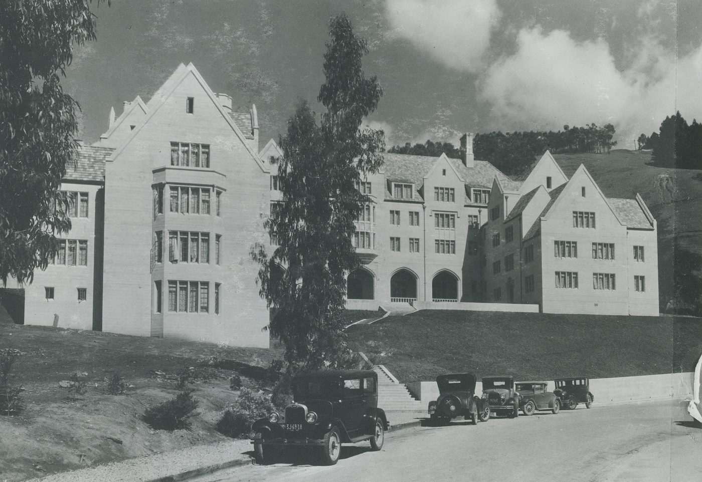
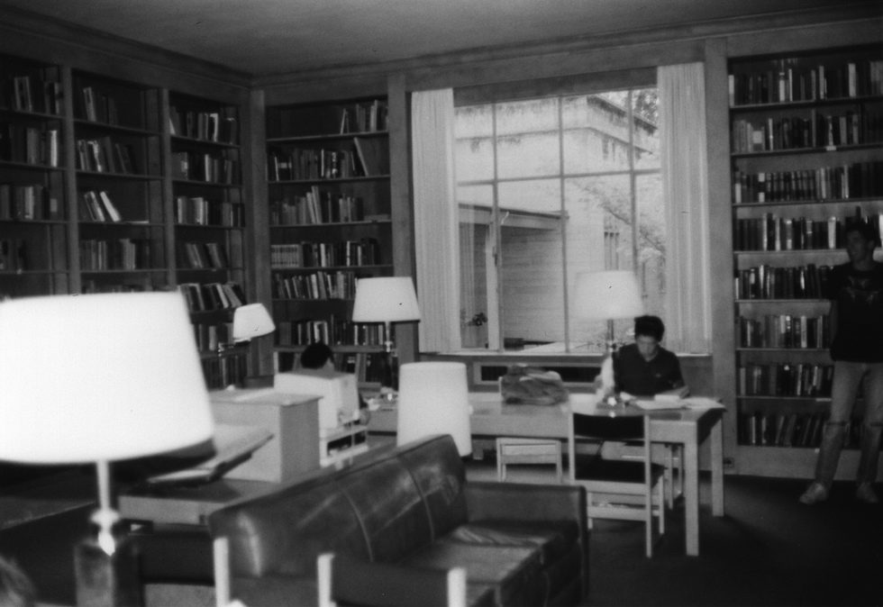
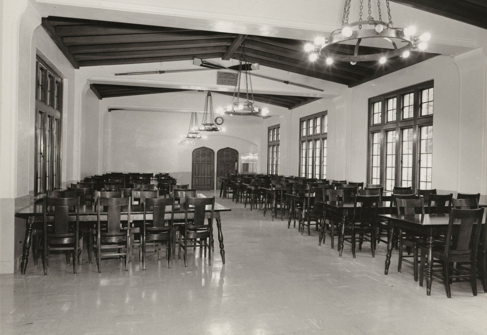
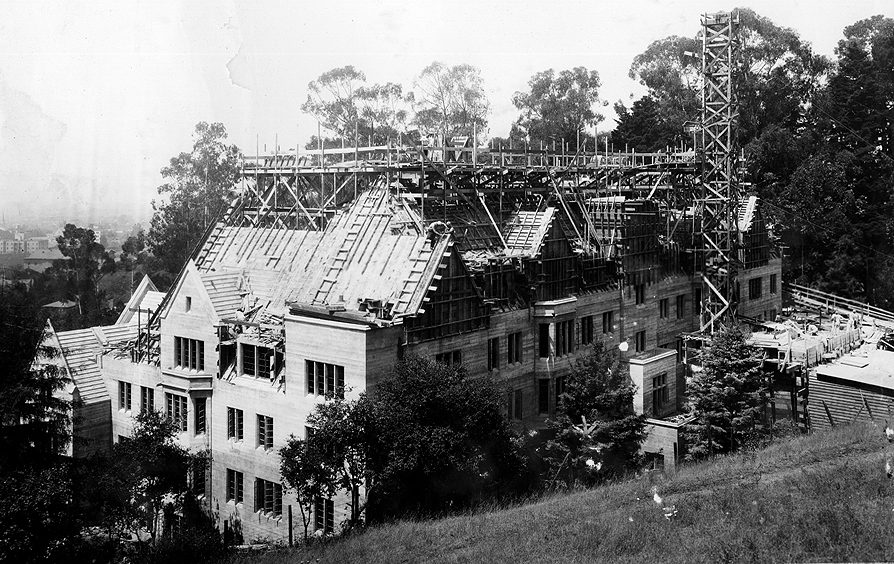
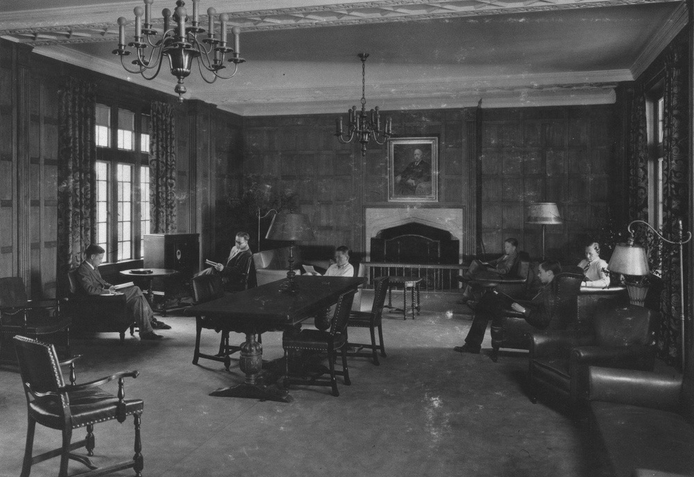

About · History
Education Through Fellowship
In 1927, Mary McNear Bowles (Class of 1882) proposed a major gift to the University in memory of her late husband, former UC Regent Philip E. Bowles (also Class of 1882), to build the first student residence hall at Berkeley. The project was championed by future UC President Robert Gordon Sproul and designed by the architect George Kelham on the residential college model of Oxford and Cambridge, then being planned for Harvard and later Yale.
Bowles Hall opened in 1929 with 102 male residents, two to a three-room suite. It offered four-year residence, gracious living spaces and community dining, and was governed by its residents under the eye of a Housemaster. The college stressed academic achievement and collegiality: tutoring, educational programs and self-government, with upperclassmen serving as mentors to newer residents.

In 1938, the Julien and Helen Hart Memorial Library was added as a gift from Berkeley Professor James D. Hart and his sister, Mrs. Joseph Bransten. It was designed as communal space for study and held historic volumes collected over generations. During World War II the Hall housed military students completing their degrees.
For nearly 50 years, the motto “Education Through Fellowship” guided more than 6,000 residents from all walks of life, many of whom went on to leadership in American and global society.
In the mid-1970s the Hall became a University-managed dormitory with admission by lottery, and its residential college and self-government were set aside. Residents kept its spirit alive: in 1988, undergraduates won it status as a Berkeley City Landmark, and in 1989 the same students saw it listed on the National Register of Historic Places.

Over time the building fell into disrepair, and when on-site dining ended in 2000 it lost much of its sense of community. In 2005, alumni led by Bob Sayles (Class of 1952) formed the Bowles Hall Alumni Association to restore the Hall to its original purpose. They won the support of the Berkeley Academic Senate in 2009 and of Chancellor Nicholas Dirks in 2013, paving the way for approval by the UC Regents and, in June 2015, a 45-year ground lease to what is now the Bowles Hall Foundation.
A privately financed, 14-month restoration followed. In August 2016 Bowles Hall reopened after more than $45 million in renovations: once again a residential college, and the only one on the Berkeley campus.
Bowles through the years
A timeline
- 1927
Mary McNear Bowles proposes a gift in memory of her husband, Regent Philip E. Bowles, to build Berkeley's first student residence hall.
- 1929
Bowles Hall opens, dedicated to “Education Through Fellowship,” with 102 residents, community dining, self-governance and four-year residence.
- 1930s
In the depths of the Depression, residents who could no longer pay are allowed to live rent-free in the attic, and paying residents share their food with them.
- 1938
The Julien and Helen Hart Memorial Library is added.
- 1943–45
Bowles joins the war effort as home to military students completing degree work. Occupancy doubles to 204.
- 1945
Bowles reverts to a UC residence hall; occupancy remains at 204.
- 1970s
Self-governance is replaced by Student Affairs oversight, and a lottery system reduces returning residents.
- 1989
Listed on the National Register of Historic Places, in an effort started by student residents and supported by the Berkeley Architectural Heritage Association.
- 2000
On-site community dining is discontinued.
- 2005
Residency is limited to first-year students. The Bowles Hall Alumni Association is founded to re-establish the residential college.
- 2009
The Bowles Hall Foundation, a California 501(c)(3), is established to partner with UC Berkeley.
- 2014
The UC Board of Regents approves the Bowles Hall Residential College plan.
- 2015
The Foundation signs a 45-year ground lease with UC Berkeley, and restoration begins.
- 2016
Restoration is completed on time and under budget. The Hall welcomes 183 new residents at a Grand Re-Opening.

